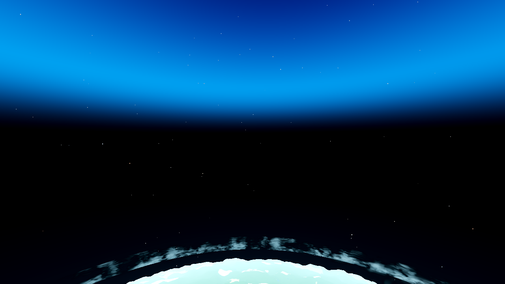
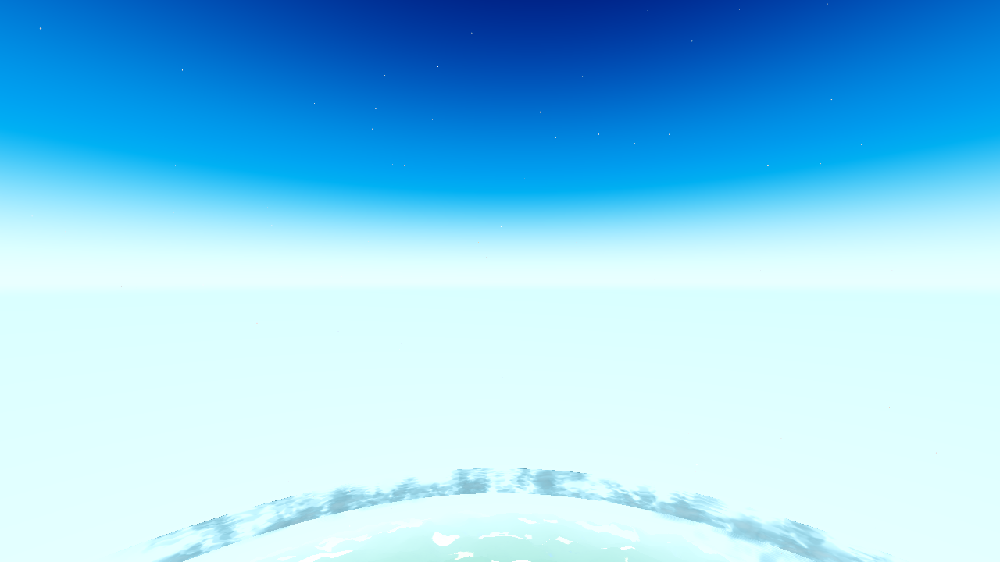
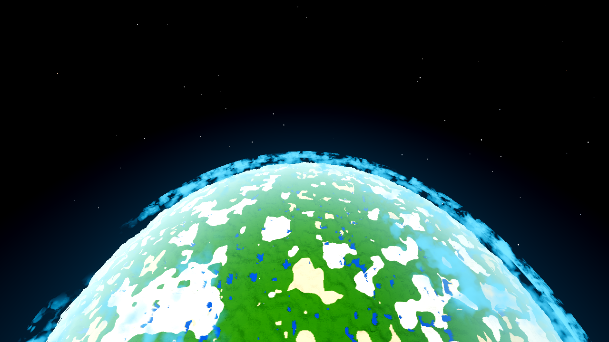

Verdict. The user's rule is now what the code does: the sky is consistent with
where the player actually is. The AC-0429 floor weight ws — which keyed
below-horizon space on the sky blend (smoothstep(0, 0.3, w), 1 from ~630 m, deep
INSIDE the A = 1200 m atmosphere, producing the user's "blue above, black below" frame — is now
the player's inside/outside position: Aero.sky_outside(alt) =
smoothstep(A, A + 0.25A, alt), pushed per frame as u_space_out
(world.gd, the same seam as u_space_sky). Inside the atmosphere the below-horizon
sky is the same air as the sky above (only the planet's surface ends it); outside, space with
the planet as the only boundary. Both acceptance halves hold in the same build: the
user's 941 m frame re-taken is one consistent sky (below-horizon rows 248.4–248.8, max
single-row step 1.43, was 37.81; zero black sky pixels), and the 2141 m outside frame still
shows space below the horizon (rows 0.00, spread 0.00, 1624 stars) with the planet's limb the
only boundary (the only step, 21.12). The transition happens at the A shell (1200 m radial),
faded over the limb's own 0.25A tail [1200, 1500] m. Ships behind the existing
no_sky_floor switch (default ON; OFF stays the pre-AC-0429 path — the A/B frame at
941 m reads the same continuous-air sky, within display quantization). All light gates green:
G0 rc 0 + 0/0, SMOKE ok, genhash 25/25 ×2 byte-identical to the current-tree reference,
meshprobe ok, shaderforce 12/12 (sky shader 27/27 with the new uniform declared + pushed).
Heavy gates are the coordinator's.
Render caveat: frames are lavapipe Vulkan (the SHIPPED Forward+ path), 1280×720, R50, the planet preset, T=0.5, seed 44, drain 600 (+SNAP_STEPS 300/600 settle checks), no AWECRAFT_LOGIC. Renders on this box are a proxy (software GL) — geometry/layout/colour evidence only, not the user's Windows look. Luminance numbers are 255-scale display values from the same pipeline before/after, so the before-vs-after comparison is valid on the same instrument.
Config (the AC-0422/AC-0429 "user's frame" lineage): seed 44, T=0.5, R50, 1280×720,
AWECRAFT_CAM=planet AWECRAFT_SAT_ALT=800 AWECRAFT_CAM_HORIZON=1 — radial
941 m, u_space_sky (w) = 0.799 (inside the atmosphere: A = 1200 m),
u_air = [208,241,251], body LOADED. rc=0 in 229 s, boot line
- Forward+ - llvmpipe, census 0/0. The sky rows settle by the s300 step (row 0:
54.7 → 57.7 at final — the residual is the drifting cloud deck, the AC-0435 feature; the sky pass
itself is stable).
| Region | BEFORE profile (row-median lum, 255) |
|---|---|
| rows 0–220 (above the local horizon) | 57.7 → 123.3 — the blue sky + sun glow |
| rows 220–320 (the sky's own boundary) | 121.6 → 0.0 — max single-row step 37.81 (raw): a line the sky model drew |
| rows 340–520 (below the horizon) | 0.00 flat black — the defect: space where air must be |
| rows 540–700 | 0.1 → 10.3 — the planet's limb air column (faint) |
| row 719 | 151.16 — the planet's limb/terrain: the only legitimate boundary |
| thirds top/mid/bottom; step at the horizon row | 98.25 / 17.19 / 9.93; 0.00 (both sides already black) |
Reproduced: blue above (rows 0–220), black below (rows 340–520), split by a boundary the sky model drew — exactly the report. The AC-0429 measurement that "passed" was this exact frame: flat zero below the horizon at 800 m, treated as the fix when 800 m is INSIDE the atmosphere.

In sky_on() (godot/core/aero_sky_gradient.gdshader), the floor's
space weight ws drove all three of AC-0429's changes (the below-horizon fill
belowc = mix(u_air, space, ws), the gradient's horizon anchor
anchor = mix(horizon_color, space, ws), the horizon haze band
hz *= (1-ws)) and was derived ws = smoothstep(0, 0.3, w) from the
sky's A-window blend — 1 from ~630 m radial, deep inside the atmosphere (A = 1200 m).
The inside/outside decision was made in the shader from the sky blend, and it fired 570 m too
early.
Now: the decision is the player's radial position about the A shell, computed in
GDScript and pushed per frame — Aero.sky_outside(alt_rad) =
smoothstep(A, A + 0.25A, alt_rad) → u_space_out (world.gd
_ac0401_push block (3), the same live radial / seam / gate as u_space_sky).
The shader reads ws = u_space_out and everything else is untouched.
godot/core/aero.gd — sky_outside(alt_rad) (the one home: A; the
0.25A tail reuses the limb's atmo_limb_falloff fraction); the
ATMOSPHERE_HEIGHT consumer list gains the new consumer.godot/core/aero_sky_gradient.gdshader — uniform u_space_out
(default 0.0 = conservative: the floor stays air, no black floor can appear on a material that
never sees the push); ws = u_space_out in sky_on() only. Untouched:
sky_off(), thin = mix(mix(w*w,w,u), w*u, u_horizon) (the uniform sky
transition rate stays uniform), the limb term, sun, stars, u_no_floor = 0 contract
(ws unused ⇒ bit-for-bit pre-AC-0429).godot/world/world.gd — _ac0439_space_out state var + the
per-frame value-gated u_space_out push (render-only: no mesh, no bake, no data).godot/ARCHITECTURE.md — the sky-pass note + the no_sky_floor
description synced in the same task (invariant 2).Ships behind the existing no_sky_floor switch (default ON, the user
asked for it): this ticket re-keys what the switch's ON path means to the rule the user has
been stating — a correction to the shipped look, not a new look option, so no second switch.
OFF remains the pre-AC-0429 path bit-for-bit (the A/B reference).
A = 1200 m radial (Aero.atmosphere_height(), env AWECRAFT_ATMO
override). Below A: INSIDE — the below-horizon sky is the same air as the sky above (the AC-0428
continuous-air shape: fill u_air, anchor horizon_eff, haze band alive); the surface ends it.
At/above A: OUTSIDE — the above-horizon sky is already fully space (w = 1 from A), so the floor
is space with the planet's limb as the only boundary (the AC-0429 shape). The fade window
[A, A+0.25A] = [1200, 1500] m reuses the limb's own 0.25A tail — the floor's last air is
the grazing column the limb term already paints, and the fade runs with the player's CLIMB, not
across the frame, so no single altitude shows a line. Why A and not the old w ≥ 0.3 (≈630 m):
A is the sky's own space boundary — the one home for "how far up is space" that
u_space_sky, the star field, the sun glow and the body already key on — and the
rule is that the decision keys on WHERE THE PLAYER IS relative to that shell.
| Region (row-median lum, 255) | BEFORE | AFTER |
|---|---|---|
| rows 0–220 (above the local horizon) | 57.7 → 123.3 | 57.7 → 142.7 — the blue sky + sun glow (the upper rows are the restored haze band's neighbours; the zenith side is unchanged — row 0 identical to 2 decimals) |
| rows 220–320 (the sky's own boundary) | 121.6 → 0.0 — the collapse; max raw step 37.81 | 142.7 → 242.6 — a smooth rise into the air family; no collapse |
| rows 340–520 (below the horizon) | 0.00 flat black — the defect | 248.8 → 248.4 — the air family (u_air ≈ 248 on display), spread < 0.6 |
| rows 540–719 | 0.1 → 10.3 (faint limb), limb 151.16 | 248.6 → 242.4 — the fogged terrain at u_air (the surface ends the air, seamlessly) |
| thirds top/mid/bottom | 98.25 / 17.19 / 9.93 | 103.85 / 234.85 / 248.48 |
| max single-row step (raw / 5sm) | 37.81 / 17.80 — a line the sky model drew | 1.43 / 1.28 — a computed gradient, no line |
| step at the horizon row (359→360) | 0.00 (both sides already black) | 0.21 — the AC-0428 order (a few /255, haze-covered) |
| sky region (outside the R+SEA disc + 40 m) | min 0.00 / mean 76.65 (blue above, black below) | min 36.35 / mean 144.41 — no black sky pixel anywhere |

| Region | AC-0429 (the space look this must keep) | AFTER (this build) |
|---|---|---|
| black-space band (row-median < 5) | rows 0–~340, flat | rows 0–330; rows 0–280 are exactly 0.00 (spread 0.00); the band's only lift is the limb air at row 320 (3.16) |
| stars in the band (lum > 40) | 2945 (after-limb2000) | 1624 — space with stars, as before |
| max single-row step (the only boundary) | 25.67 at the planet's limb | 21.12 at row 427 — the planet's limb (space → limb air → the body disc, rows 440–719 at 85–166). No other step in the frame. |

Both halves hold in the same build, at once. The user's 941 m frame (inside): one consistent sky, below-horizon rows at 248.4–248.8 (the air family), max single-row step 1.43 (was 37.81), zero black sky pixels (the sky-region minimum is 36.35, the blue zenith side). The 2141 m frame (outside): below-horizon rows 0.00 (spread 0.00) with 1624 stars, the planet's limb the only boundary (21.12). The same code, the same build, both rules of the user's statement true — because the decision now keys on WHERE THE PLAYER IS (radial about the A shell), not on which side of the local horizon a ray points.
| Gate | Result |
|---|---|
| G0 (census + exit status, the UAF pair) | rc=0, SCRIPT ERROR 0, SHADER ERROR 0 |
| SMOKE (player;interact;light;fluids;genhash) | rc=0, 0/0, 5/5 RESULT lines |
| genhash (world.gd touched) | 25/25 byte-identical to the current-tree reference (.scratch/HEAVY-r14/genhash.log == .scratch/AC-0311-gates/p2_genhash_r1.log), smoke run + standalone run, the two runs deterministic (identical) |
| PROBE (meshprobe) | ok=true, c_match 1866/1866, arr_match 32/32, compact_ok 32/32, rc=0, 0/0 |
| shaderforce (Forward+ forced-compile) | 12/12 ok, failed [], rc=0, 0/0;
aero_sky_gradient declared=27 params=27 (u_space_out declared + pushed), verdict ok; boot line
- Forward+ - llvmpipe |
AWECRAFT_NOSKYFLOOR=0, the same 941 m frame (captures/ab-off-inside-h800.png):
row 0 identical to 2 decimals (57.69), below-horizon rows 248.8–249.1 (the u_air floor — the
pre-AC-0429 state at every altitude), max single-row step 1.43, thirds 103.62 / 232.47 / 248.48
vs the new ON path's 103.85 / 234.85 / 248.48 — inside the atmosphere the two paths read the
same continuous-air sky (the sub-2/255 difference is the anchor term: OFF keeps the AC-0428
u_air-blended anchor, ON takes horizon_color at ws = 0 — display-compressed to invisibility).
Their difference is exactly where the user said it must be: OUTSIDE, where OFF keeps the bright
air floor (the first skybox-edge report, the A/B reference) and ON is space.
| Path | What |
|---|---|
| tasks/AC-0439/AC-0439-results.html | this page (captures linked from captures/) |
| tasks/AC-0439/captures/before-inside-h800.png | the user's frame on the current build (the defect, reproduced) |
| tasks/AC-0439/captures/after-inside-h800.png | the user's frame re-taken (acceptance half 1) |
| tasks/AC-0439/captures/after-outside-limb2000.png | outside the atmosphere (acceptance half 2) |
| tasks/AC-0439/captures/ab-off-inside-h800.png | the OFF-switch A/B at 941 m |
| tasks/AC-0439/plan.html | the plan (goal, files, gates, before frame) |
| tasks/AC-0439/measure.py | the luminance-profile instrument (the AC-0429 copy: profile/disc/diff/skyfit) |
| tasks/AC-0439/skyband.py | the sky-region census (impact-parameter disc mask, spread/stars/profile) |
| .scratch/AC-0439/ + .scratch/AC-0439-*.log | all run logs (G0, smoke, genhash r2, meshprobe, shaderforce, the four shot logs + the three step snaps per shot) |
thin = mix(mix(w*w,w,u), w*u, u_horizon) — the
uniform sky transition rate, which must stay uniform), the limb term, the body, the clouds, the
fog, sky_off(), the star field or the sun terms — the boundary decision is re-keyed,
nothing else is redistributed.no_sky_floor switch (default ON) — the re-key is a correction to what that switch's
ON path means (the user's stated rule, asked for three times), not a new look option; the
conservative-default rule applies to looks the user has not asked for. The shader default
(u_space_out = 0.0) is conservative in the material sense: a material that never
sees the push keeps the air floor — no black floor can appear from an unpushed material.AWECRAFT_SAT_ALT=1100 (radial 1241, mid-window) + the horizon aim if wanted.